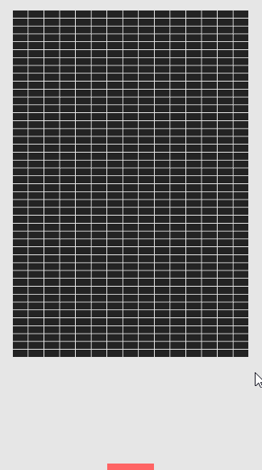

DOTS (Data-Oriented Technology Stack) 是 Unity 近年來主打的核心功能之一，充分利用多核、多線程處理讓遊戲的運行速度更快、更高效，讓預設環境下開發的效能有飛躍性地提升。
由於 DOTS 目前還屬於開發中的架構，導致架構內容不斷的變化，此篇會先比較過往版本中的 DOTS 與 2019.3 版本有何種差異。
並在 2019.3 版本的基礎上，完整開發出一個擁有基本功能的打磚塊遊戲，實作內容包含：定義碰撞範圍、玩家輸入、移動物件、碰撞偵測、刪除物件。
DOTS 主要由三個部分組成，Job System、Entity Component System、Burst Compiler。
Job System: 用於高效運行多線程程式碼。
Entity Component System (ECS): 用於默認編寫高效能程式碼。
Burst Compiler: 用於生成高度優化的原生碼。
在過時 DOTS (Unity 2019 前) 中，開發者需要專注的腳本內容相當繁雜，如：Component、MonoBehaviour to Component、System、Job。
在最新 DOTS (Unity 2019 後) 中，則大幅改善了這個問題，新增了 [GenerateAuthoringComponent] Attribute 用於將 MonoBehaviour 自動轉換至 Component，也在 Component System 中新增 lambda 表達式，能夠更快速度撰寫 Job 內容。
由於 DOTS 每個版本都在改變，此文章資訊僅供參考，若版本不同可能會導致部分實作無法運作。
Unity: 2019.3.1f1
Entities: preview.24 – 0.6.0
Hybrid Renderer: preview.24 – 0.3.4
傳統方式 (MonoBehaviour)
1. 新增 MonoBehaviour 並撰寫相關邏輯
using UnityEngine;
public class ClassicRotate : MonoBehaviour
{
public float rotateSpeed = 45f;
private void Update()
{
transform.Rotate(Vector3.up * rotateSpeed * Time.deltaTime);
}
}
過時 DOTS 方式 (Unity 2019 前)
1. 新增 ComponentData
using Unity.Entities;
public struct ObsoleteDOTSRotateData : IComponentData
{
public float rotateSpeed;
}
2. 新增 MonoBehaviour 將資料轉換至 ComponentData
using Unity.Entities;
using UnityEngine;
public class ObsoleteDOTSRotateDataComponent : MonoBehaviour, IConvertGameObjectToEntity
{
public float rotateSpeed = 45f;
public void Convert(Entity entity, EntityManager dstManager, GameObjectConversionSystem conversionSystem)
{
dstManager.AddComponent<ObsoleteDOTSRotateData>(entity);
dstManager.SetComponentData(entity, new ObsoleteDOTSRotateData() { rotateSpeed = rotateSpeed });
}
}
3. 新增 ComponentSystem
using Unity.Entities;
using Unity.Jobs;
public class ObsoleteDOTSRotateSystem : JobComponentSystem
{
protected override JobHandle OnUpdate(JobHandle inputDeps)
{
return default;
}
}
4. 新增 Job
using Unity.Burst;
using Unity.Collections;
using Unity.Entities;
using Unity.Mathematics;
using Unity.Transforms;
[BurstCompile]
public struct OldRotateJob : IJobForEach<Rotation, ObsoleteDOTSRotateData>
{
public float deltaTime;
public void Execute(ref Rotation c0, [ReadOnly] ref ObsoleteDOTSRotateData c1)
{
float rotateSpeed = c1.rotateSpeed;
rotateSpeed /= 180;
rotateSpeed *= math.PI;
rotateSpeed *= deltaTime;
c0.Value = math.mul(c0.Value, quaternion.RotateY(rotateSpeed));
}
}
5. 執行 Job
public class ObsoleteDOTSRotateSystem : JobComponentSystem
{
protected override JobHandle OnUpdate(JobHandle inputDeps)
{
OldRotateJob job = new OldRotateJob() { deltaTime = Time.DeltaTime };
return job.Schedule(this, inputDeps);
}
}
最新 DOTS 方式
1. 新增 ComponentData
using Unity.Entities;
[GenerateAuthoringComponent]
public struct LatestDOTSRotateData : IComponentData
{
public float rotateSpeed;
}
2. 新增 ComponentSystem
using Unity.Entities;
using Unity.Jobs;
public class LatestDOTSRotateSystem : JobComponentSystem
{
protected override JobHandle OnUpdate(JobHandle inputDeps)
{
return default;
}
}
3. 執行 Job
using Unity.Entities;
using Unity.Jobs;
using Unity.Mathematics;
using Unity.Transforms;
public class LatestDOTSRotateSystem : JobComponentSystem
{
protected override JobHandle OnUpdate(JobHandle inputDeps)
{
float deltaTime = Time.DeltaTime;
return Entities.ForEach((ref Rotation rotation, in LatestDOTSRotateData data) =>
{
float rotateSpeed = data.rotateSpeed;
rotateSpeed /= 180;
rotateSpeed *= math.PI;
rotateSpeed *= deltaTime;
rotation.Value = math.mul(rotation.Value, quaternion.RotateY(rotateSpeed));
}).Schedule(inputDeps);
}
}
碰撞範圍
1. 新增碰撞範圍 ComponentData
因為這邊需要客製化轉換過程所以不使用 [GenerateAuthoringComponent]
using Unity.Entities;
using Unity.Mathematics;
public struct BoundData : IComponentData
{
public float3 extens;
public float3 min;
public float3 max;
}
2. 新增 MonoBehaviour 將資料轉換至 ComponentData
由於不同物件的碰撞範圍不同 (牆壁、磚塊、板子)
為了方便更新碰撞範圍所以客製化轉換過程
using UnityEngine;
using Unity.Entities;
public class BoundDataComponent : MonoBehaviour, IConvertGameObjectToEntity
{
public Vector3 extents;
private void Reset()
{
Renderer renderer = GetComponent<Renderer>();
extents = renderer.bounds.extents;
}
public void Convert(Entity entity, EntityManager dstManager, GameObjectConversionSystem conversionSystem)
{
dstManager.AddComponent<BoundData>(entity);
dstManager.SetComponentData(entity, new BoundData() { extens = extents });
}
}
3. 新增碰撞範圍 System
Entities.ForEach((ref BoundData boundData, in Translation translation) =>
{
boundData.min = translation.Value - boundData.extens;
boundData.max = translation.Value + boundData.extens;
})
板子
1. 新增板子輸入 ComponentData
using Unity.Entities;
using UnityEngine;
[GenerateAuthoringComponent]
public struct PaddleInputData : IComponentData
{
public KeyCode leftKey;
public KeyCode rightKey;
}
2. 新增板子輸入 System
Entities.WithoutBurst()
.ForEach((ref PaddleInputData paddleInputData, ref PaddleMovementData moveData) =>
{
moveData.direction = 0;
moveData.direction += Input.GetKey(paddleInputData.rightKey) ? 1 : 0;
moveData.direction -= Input.GetKey(paddleInputData.leftKey) ? 1 : 0;
}).Run();
3. 新增板子移動 ComponentData
using Unity.Entities;
[GenerateAuthoringComponent]
public struct PaddleMovementData : IComponentData
{
public int direction;
public float speed;
}
4. 新增板子移動 System
float deltaTime = Time.DeltaTime;
float xBorder = (float)Screen.width / Screen.height * Camera.main.orthographicSize;
Entities.ForEach((ref Translation trans, in PaddleMovementData data) =>
{
trans.Value.x = math.clamp(trans.Value.x + data.direction * data.speed * deltaTime, -xBorder, xBorder);
}).Run();
磚塊
1. 新增磚塊 ComponentData
using Unity.Entities;
[GenerateAuthoringComponent]
public struct BrickTag : IComponentData { }
球
1. 新增球移動 ComponentData
using Unity.Entities;
using Unity.Mathematics;
[GenerateAuthoringComponent]
public struct BallMovementData : IComponentData
{
public float3 curPosition;
public float3 lastPosition;
}
2. 取得所有非磚塊碰撞範圍
Entities.WithNone<BrickTag>()
.ForEach((in BoundData boundData) =>
{
boundDatas.Add(boundData);
}).Run();
int noneBrickCount = boundDatas.Length;
3. 取得所有磚塊 Enity 及碰撞範圍
Entities.WithAll<BrickTag>()
.ForEach((Entity entity, in BoundData boundData) =>
{
brickEntities.Add(entity);
boundDatas.Add(boundData);
}).Run();
4. 新增球移動邏輯
移動邏輯可參考之前的文章 Verlet Integration – A Case Study of Boundary and Rope Simulator
5. 新增球碰撞邏輯
BoundData boundData = boundDatas[i];
bool inBound = nextPosition.x >= boundData.min.x &&
nextPosition.x <= boundData.max.x &&
nextPosition.y >= boundData.min.y &&
nextPosition.y <= boundData.max.y;
6. 加入消除磚塊功能
if (inBound)
{
bool isBrick = i >= noneBrickCount;
if (isBrick)
{
entityCommandBuffer.DestroyEntity(brickEntities[i - noneBrickCount]);
}
}
World destinationWorld = World.DefaultGameObjectInjectionWorld;
BlobAssetStore blobAssetStore = new BlobAssetStore();
GameObjectConversionSettings gameObjectConversionSettings = GameObjectConversionSettings.FromWorld(destinationWorld, blobAssetStore);
Entity entity = GameObjectConversionUtility.ConvertGameObjectHierarchy(Prefab, gameObjectConversionSettings);
Entity instanceEntity = destinationWorld.EntityManager.Instantiate(entity);

無限制子彈數量阿祥的開發日常 is creating game development tutorial | Patreon
[天天直播] 运用DOTS还原经典游戏《Pong》（上）
[天天直播] 运用DOTS还原经典游戏《Pong》（下）
[技術研究] – Unity DOTS技术详解 – 宣雨松
Unity-Technologies/DOTSSample